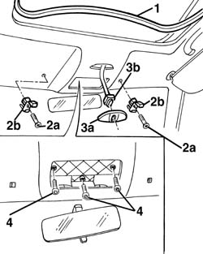
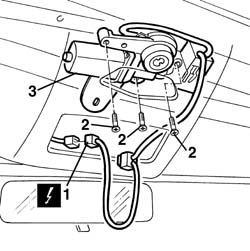
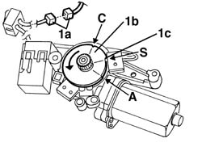

7030B70 sun-roof control switch - r+r
- Path
- Procedures > 70 FITTINGS > 7030 SUN ROOF AND HOOD > 7030B sliding roof > 7030B70 sun-roof control switch - r+r
- Kind
- repair procedure (removal / refitting; the operation number is the code)
- Applies to
- all engines; all production periods
- Interactive page
- https://sloeber94.github.io/elrnDB-a156/en/#/3238770
Applies to: all engines; all production periods
 Removing
Removing
 Refitting
Refitting7040E40 modular front courtesy light - r r
Put the sliding roof in the opened position
1. Remove the anterior side of the gasket from the slindig roof
2. Loosen the screws (2a) and remove the holds (2b) from the sun visor wimgs.
3. Remove the heelpost (3a) of the slindig roof sand remove the switch (3b) from the heelpost
4. Remove the anterior fixing screws of the cover pavilion

Applies to: all engines; all production periods
1. Disconnect the electric connection of the engine
 | Name | Connector |
|---|---|---|
1 | Sun roof motor |
2. Loosen the fixing screws of the engine
3. Remove the engine completed with the central and the switch
If necessary disconnect the electric cables from the central brake shoe

Applies to: all engines; all production periods
Refitting
RemovingVerify that the engine has no damage
If necessary verify the connections between the engine, the central and the switch
If disconnected, reconnect the electric cables to the central brake shoe
1. Before installing the engine connect it to the electric connection (1a) and turn the cam wheel (1b) until its "S" point corresponds to the microswitch (1c). The rotation should be done in the clockwise direction, passing through the "C" point.

Applies to: all engines; all production periods
Replace the engine
Tighten the screws
Verify the functionality of the sliding roof
Tighten the screws of the cover pavilion
Install the switch on the heelpost and install the it on the cover pavilion
Install the holds of the sun visor wings
Install the gasket on the sliding roof compartment
Start the engine and verify the regular functionality of the sliding roof